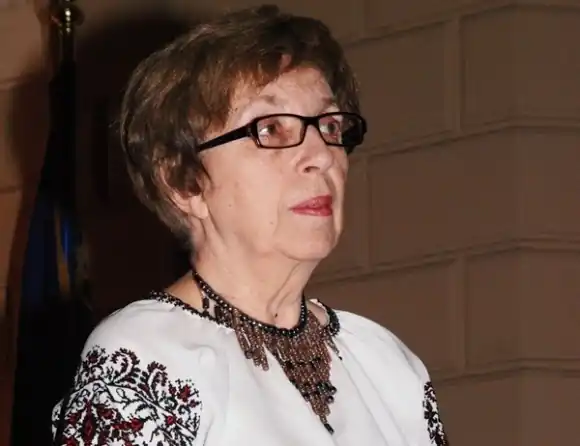
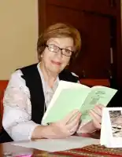
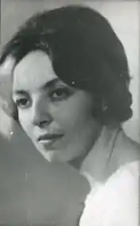

Стасів-Калинець Ірина Онуфріївна (6.12.1940-31.07.2012) — письменниця, публіцистка, культуролог, літературознавець, філологиня, громадська діячка. Народилася у Львові. З дитинства палко мріяла про незалежність України. Після закінчення середньої школи, два роки працювала на виробництві. Навчалася на слов'янському відділенні філологічного факультету Львівського національного університету імені Івана Франка, після закінчення якого у 1964 році, працювала методистом обласного Будинку народної творчості, вчителькою, бібліотекарем, викладачем української мови та літератури у Львівському політехнічному інституті. Публікувала вірші для дітей у періодичних виданнях.
За виступи на оборону переслідуваних діячів культури була звільнена з роботи, а 12 січня 1972 року заарештована на 6 років ув'язнення в таборах суворого режиму та 3 роки заслання. Через півроку такий же вирок отримав її чоловік, Ігор Калинець. Заслання відбували разом у Читинській області, тоді як маленька донька лишалася на волі без батьків упродовж 9 років. Однак ніщо не могло зламати волелюбного духу Ірини Онуфріївни: вона творила вірші, малюнки і вишивки, підбадьорювала друзів, оголошувала голодування на підтримку інших в'язнів, висилала телеграми з протестами в різні установи СРСР.
Після виходу на волю, Ірина Калинець брала щонайактивнішу участь у культурному та громадському житті держави, стала організатором створення важливих товариств, низки нових навчальних закладів, провела реформу школи в напрямку українізації шкільної системи, сприяла легалізації і поверненню храмів УГКЦ, багато друкувалася в пресі. У 1990 році Ірину Калинець було обрано депутатом Верховної Ради України, де вона продовжувала працювати над освітянськими проблемами. У 1998 році за громадську діяльність її визнано "Героїнею світу" серед ста найвідоміших жінок (США, Ротчестер), 2000 року — нагороджено орденом Княгині Ольги ІІІ ступеня і 2005 року – ІІ ступеня. Окрім активної громадської роботи Ірина Калинець плідно працювала на творчій і науковій ниві. Вона опублікувала збірки "Поезії" (1991) і "Шлюб з полином" (1995), спільну книжку з Ігорем Калинцем "Це ми, Господи" (1993), історичний детектив "Вбивство тисячолітньої давності". З-під її пера вийшли ґрунтовні літературознавчі та культурологічні розвідки "Студії над "Словом про Ігорів похід" (1999), "Загадки хрещення Русі" (2000), "Епоха гунів та її передісторія", "Тарас Шевченко і св. Августин", численні публіцистичні статті та есеї. Ірина Калинець понад усе любила Україну й навчала цьому насамперед дітей. Першу книжку казок "Лелека і синя Хмара" видала 1993 року у видавництві "Веселка". З того часу маленькі читачі мали змогу познайомитися з багатьма іншими її казками: "Пімбо-Бімбо", "Солом'яна лялька", "Гість з крижаного краю", "Святий Миколай", "Іграшковий телефон", "Хмарка", "Оленчин Столик", "Панна Клякса", "Лінобіль", "Дерев'яний Коник", які вийшли окремою збіркою "Казки іграшкового телефону". Вони вчать любити рідну землю, відрізняти добро від зла, бути сильними і добрими. Книжки письменниці: